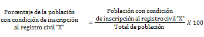
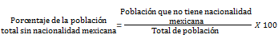

- Distribución de la población según inscripción en el registro civil
- Tiene acta de nacimiento.
- No tiene acta de nacimiento.
- Registrado en otro país.
- No especificado.
- Porcentaje de la población que no tiene nacionalidad mexicana
Es la población de acuerdo a su condición de inscripción al registro civil, respecto al total de la población, expresada por cada cien.
Donde "X" se refiere a alguna de las siguientes condiciones de inscripción al registro civil:
Es el cociente de la población que no tiene nacionalidad mexicana, entre la población total, por cien.
